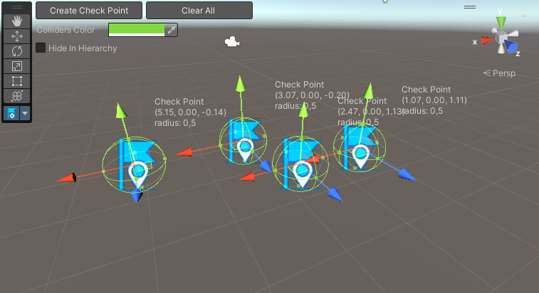

Checkpoints
Sometimes we need saving the player progress at some physical point. You can create such points in the editor or at runtime.
Creating checkpoints in the editor
In the scene view in the toolbar you can see Check Points Creator tool

Click on this or tap "C" button on keyboard and the tool will activate. In the upper left corner there is a Create Check Point button

When you create your first checkpoint, also other buttons will be displayed in the view

The tool supports multiply points editing

In code
There are 2 commands to quickly create checkpoints at runtime
CheckPointsFactory.CreateCheckPoint(Vector3 position, float radius = 0.5f);
CheckPointsFactory.CreateCheckPoint2D(Vector2 position, float radius = 0.5f);